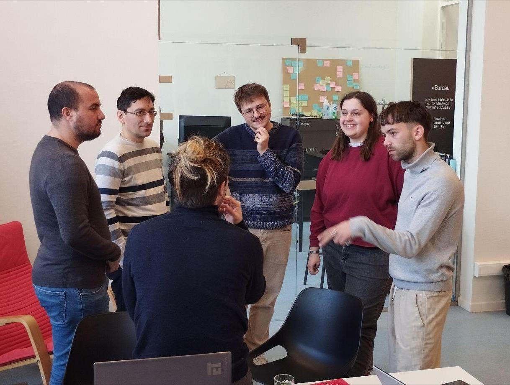
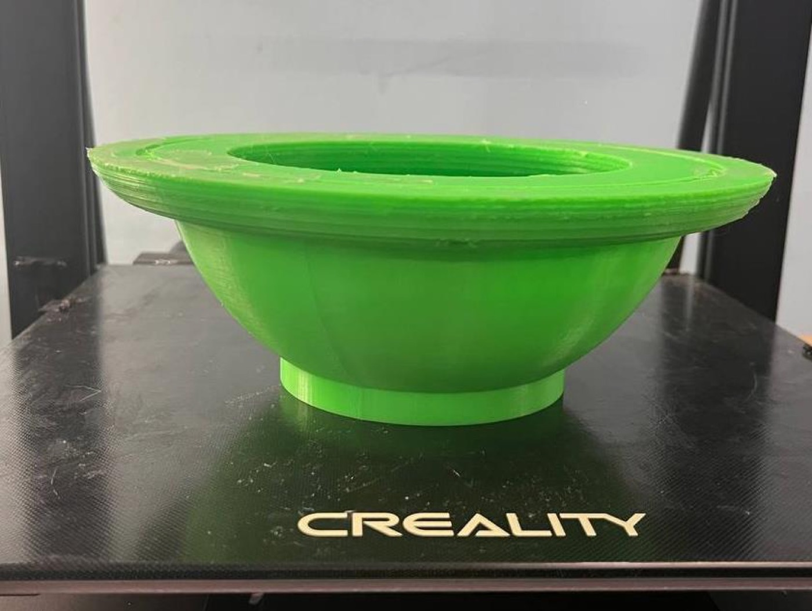
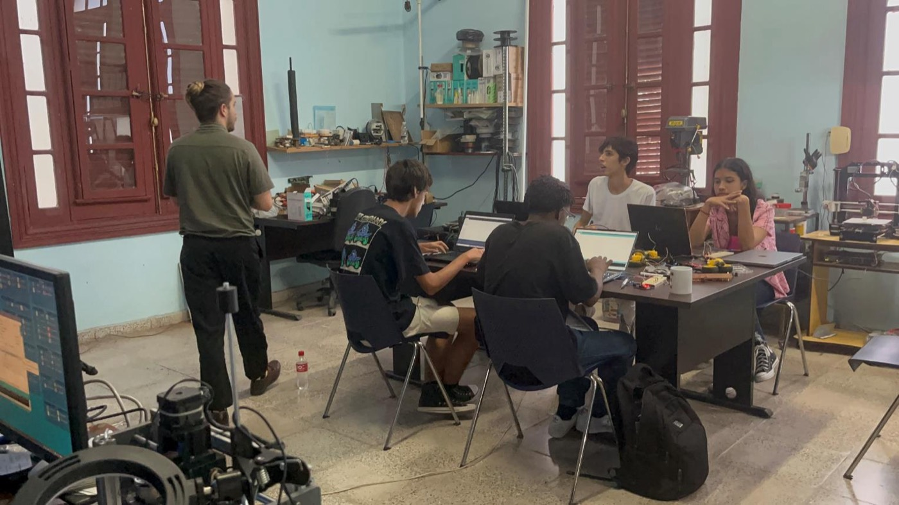

JUL–SEP2024
First prototypes, straight out of FabAcademy
PhD candidates Alex Manuel Rivera Rivera and Luis Abel Rodríguez de Torner complete their first stay at the Université Libre de Bruxelles and pass the international FabAcademy course. As their final project, Rivera presents a first weather-buoy prototype and Rodríguez a first small-scale wave channel. In parallel, the purchase list for the future FabLab at the Faculty of Physics is finalized.
From July 15 to 20, both teach basic electronics and Arduino at the Physics Summer School to pre-university students, and on August 17 the project reaches national television on the program Observatorio Científico.


